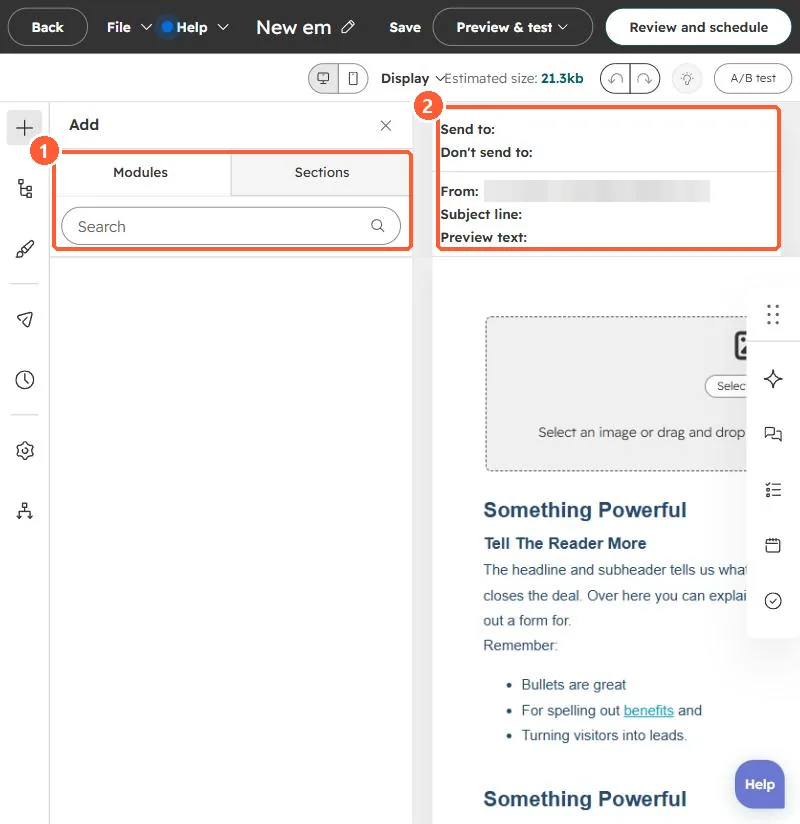

Short answer
Smart content shows a different version of a module (or an email subject line) based on a rule. HubSpot's KB lists rules such as country (from IP address), device type (from the browser user agent), referral source and ad source (from UTM parameters), among others. Smart content in marketing emails needs Marketing Hub Professional or Enterprise. Preview as a contact to check it; smart subject lines need a test send.
1. Where it lives
Select a module in the editor to add smart rules. This is the email editor in my demo portal, with the modules panel on the left.


2. Limits to know
- Device type relies on the browser's user agent, which can be changed, so HubSpot notes it is not fully reliable.
- Global modules support smart content; modules inside global groups do not. See global modules.
- In the updated email editor, all modules except Web version link and Email footer support it.
3. Simpler options
For one field, a personalization token is enough. See token defaults.